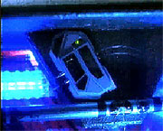
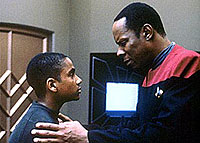
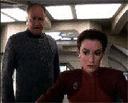

MANCHETE
DO EPISDIO
Premissa pouco
inspirada sobrevive
graas qumica dos personagens
Episdio
anterior | Prximo
episdio
Sinopse:
Data Estelar:
46423.7.
Um vrus mortal criado por terroristas
Bajoranos h 18 anos, durante a poca da construo da
estao pelos Cardassianos, liberado por acidente em Deep
Space Nine, quando o chefe O'Brien consertava um
sintetizador de alimentos.

O
vrus gradualmente infectou todos a bordo, gerando um estado de
afasia (incapacidade de se comunicar ou de entender o que os
outros dizem) em toda a tripulao, que com o tempo, conduziria
morte.
Kira corre contra o tempo procurando pessoas ligadas ao terrorismo
Bajoriano poca da ocupao Cardassiana, na esperana de
encontrar um cientista capaz de fornecer um antdoto.
Ela encontra o auxiliar do responsvel pela criao do vrus,
que capaz de engendrar um antdoto a partir dos primeiros
resultados obtidos pelo doutor Bashir.
Comentrios:
A trama de "Babel" pouco
inspirada, mas bem executada. A idia de que foram os Bajoranos
que desenvolveram e instalaram o vrus muito interessante,
principalmente porque mostra como o feitio pode se virar contra
o feiticeiro.
Para citar um exemplo contemporneo, podemos citar o caso do
submarino nuclear russo que em agosto de 2000 foi
irremediavelmente danificado pela exploso de uma mina instalada
no local durante a Segunda Guerra Mundial, causando a morte de
toda a tripulao. Felizmente, em Deep Space Nine,
os tripulantes foram mais felizes.

A
idia de funcionamento do vrus bastante interessante, porque
ressalta como a comunicao importante para que as pessoas
possam realizar qualquer tipo de tarefa. O vrus Bajoriano reduz
os infectados total incoerncia verbal.
Porm, tirando esses detalhes, a trama do episdio mecnica
e previsvel, apesar de contar com alguns bons momentos vividos
pelos personagens.
O prlogo mostrando um O'Brien exausto aps consertar metade da
estao (aparentemente sozinho) antolgico. A forma como
Kira (engenhosamente) encontra um cientista Bajorano que colaborou
no desenvolvimento do vrus e que por isso teria boas chances de
encontrar o antdoto, e o seqestra, levando-o a uma estao
em quarentena para encontrar tal cura 100% Kira! Alm desses
dois destaques, as interaes entre Ben e Jake e entre Odo e
Quark funcionam como usual.

Vale
mencionar que a soluo um pouco simples demais, como,
alis, so tratados todos os problemas tcnicos e mdicos em Jornada
nas Estrelas. A cura encontrada rpido demais, algo
um pouco difcil de acreditar, mesmo levando em conta a
"adiantada" que Bashir deu aos estudos.
Finalmente, pode-se definir "Babel"
como um episdio que tentou ser voltado para a prpria
histria, mas que sobreviveu predominantemente pela qumica
entre os personagens.
Citaes:
Odo - "Rom is an
idiot... he couldn't fix a straw if it was bent."
("Rom um idiota. Ele no poderia consertar um canudo se
estivesse entortado.")
Trivia:
 Somente Ira Steven Behr foi listado como tendo escrito este
episdio em nota imprensa emitida na poca pela Paramount.
Somente Ira Steven Behr foi listado como tendo escrito este
episdio em nota imprensa emitida na poca pela Paramount.
O episdio contou com uma participao especial no-creditada
de Dan Curry como Dekong Elig (na realidade, sua foto, vista em um
monitor de computador).
Ficha
tcnica:
Histria de Sally Caves e
Ira Steven Behr
Roteiro de Michael McGreevey e Naren
Shankar
Direo de Paul Lynch
Exibido em 25/01/1993
Produo: 005
Elenco:
Avery Brooks como
Benjamin Lafayette Sisko
Ren Auberjonois como Odo
Nana Visitor como Kira Nerys
Colm Meaney como Miles Edward O'Brien
Siddig El Fadil como Julian Subatoi Bashir
Armin Shimerman como Quark
Terry Farrell como Jadzia Dax
Cirroc Lofton como Jake Sisko
Elenco convidado:
Jack Kehler como Jaheel
Matthew Faison como Surmak Ren
Ann Gillespie como enfermeira Jabara
Geraldine Farrell como Galis Blin
Bo Zenga como Asoth
Kathleen Wirt como "vtima de afasia"
Lee Brooks como "vtima de afasia"
Richard Ryder como "segurana
Bajoriano"
Frank Novak como "homem de negcios"
Todd Feder como "homem da Federao"